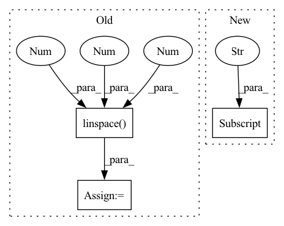

Pattern ID :18971
Before Change
sol : callabale of the solution
"""
X = Variable(torch.linspace(-5 ,5 ,100 ) .view(100,1,1))
X.requires_grad = True
xn = X.detach().numpy().flatten()
if callable(sol):
vs = sol(xn)
plt.plot(xn,vs,color="//b70000",linewidth=4,linestyle="--")
vals = net.wf(X)
vn = vals.detach().numpy().flatten()
vn /= np.linalg.norm(vn)
plt.plot(xn,vn,color="black",linewidth=2)
if pot:After Change
show_plot = False
X = Variable(torch.linspace(domain["xmin"],domain["xmax"] ,res).view(res,1))
X.requires_grad = True
xn = X.detach().numpy().flatten()
In pattern: SUPERPATTERN
Frequency: 3
Non-data size: 3
Instances Fragment ID: 61677485
Project Name: nlesc-jcer/qmctorch
Commit Name: 37d3f7cd139f4d92d321cada5405fa11bb6c9574
Time: 2019-06-19
Author: nicolas.gm.renaud@gmail.com
File Name: pyCHAMP/solver/plot.py
M Class Name: AnonimousClass
N Class Name: AnonimousClass
M Method Name: plot_wf_1d(8)
N Method Name: plot_wf_1d(4)
M Parent Class:
N Parent Class:
M File Name: pyCHAMP/solver/plot.py
N File Name: pyCHAMP/solver/plot.py
M Start Line: 109
M End Line: 138
N Start Line: 108
N End Line: 160
Before Change
for i in range(10):
x, y = data[i]
t = torch.linspace(0 , 10 , 500 )
// Assert no data leakage
// print(net(y[:201].unsqueeze(0).unsqueeze(0))[0, 0, 200])
// print(net(y.unsqueeze(0).unsqueeze(0))[0, 0, 200])After Change
)
for s in dataset_val:
x, y, tx, ty = s["x"], s["y"] , s["tx"], s["ty"]
// Assert no data leakage
// print(net(y[:201].unsqueeze(0).unsqueeze(0))[0, 0, 200]) Fragment ID: 61677501
Project Name: cheind/autoregressive
Commit Name: d17fe69c5e243b6c1fbac7a87987e5d602a7d950
Time: 2021-10-16
Author: christoph.heindl@gmail.com
File Name: autoregressive/model.py
M Class Name: AnonimousClass
N Class Name: AnonimousClass
M Method Name: eval(1)
N Method Name: eval(1)
M Parent Class:
N Parent Class:
M File Name: autoregressive/model.py
N File Name: autoregressive/model.py
M Start Line: 122
M End Line: 141
N Start Line: 146
N End Line: 175
Before Change
if self.split != "test":
batch["label_valence"] = torch.from_numpy(labels[..., 0])
// discretize valence into categories
bins = np.linspace(-1 , 1 , 4 , endpoint=False)
class_labels = np.digitize(labels[..., 0], bins) - 1
batch["class_valence"] = torch.from_numpy(class_labels)
batch["label_arousal"] = torch.from_numpy(labels[..., 1])
After Change
if self.split != "test":
batch["label_valence"] = torch.from_numpy(labels[..., 0])
batch["class_expr"] = expr_labels
batch["expr_valid"] = expr_valid
batch["label_arousal"] = torch.from_numpy(labels[..., 1])
return batch Fragment ID: 61677495
Project Name: sailordiary/m3f.pytorch
Commit Name: a576188eaa852121b4277b8a4553ded796eadeb9
Time: 2020-02-03
Author: me@sailorzhang.com
File Name: models/dataset.py
M Class Name: AffWild2SequenceDataset
N Class Name: AffWild2SequenceDataset
M Method Name: __getitem__(2)
N Method Name: __getitem__(2)
M Parent Class: Dataset
N Parent Class: Dataset
M File Name: models/dataset.py
N File Name: models/dataset.py
M Start Line: 213
M End Line: 243
N Start Line: 199
N End Line: 255